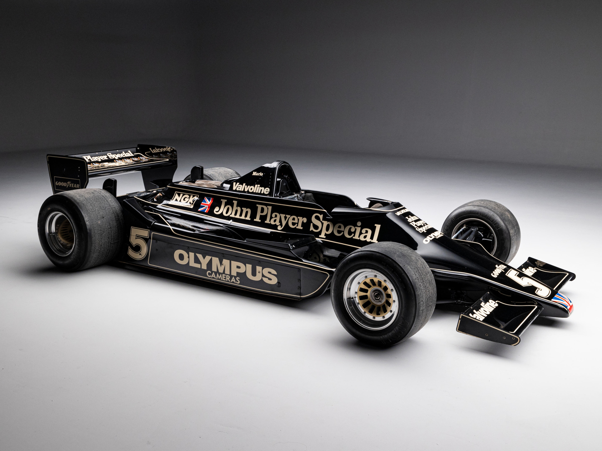
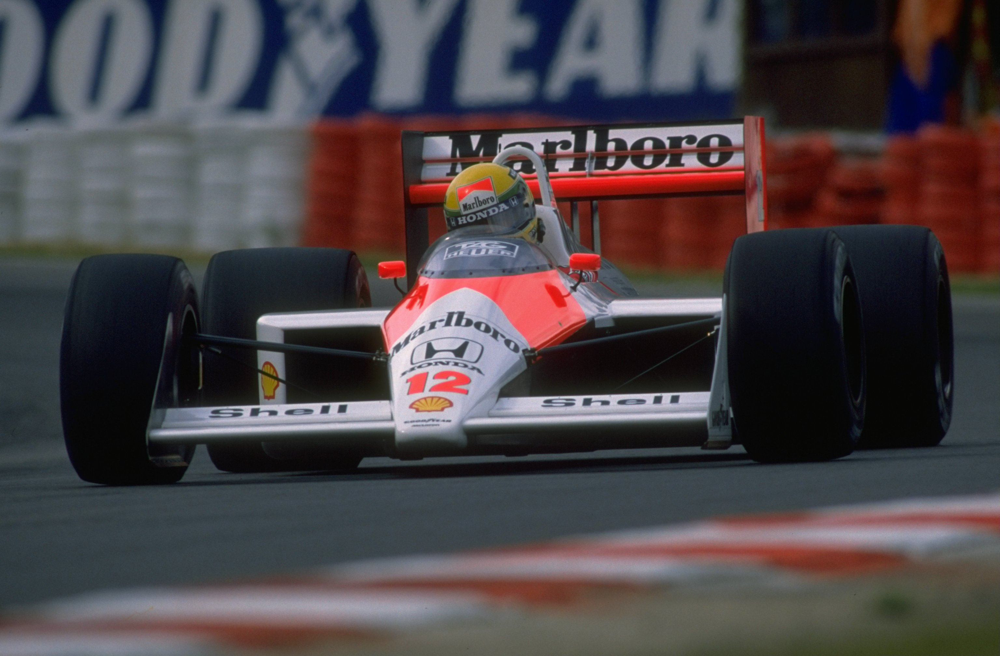
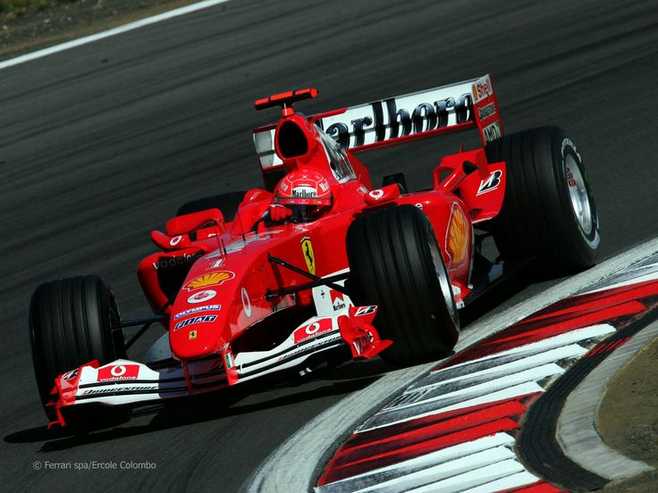
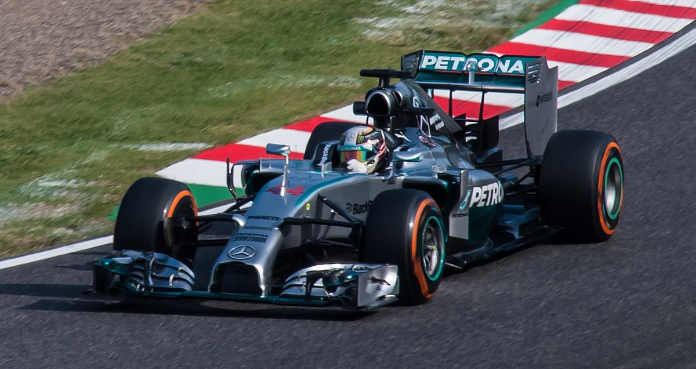

Evolución de los Autos de Fórmula 1
| Año | Modelo | Características | Imagen |
|---|---|---|---|
| 1950 | Alfa Romeo 158 | Motor delantero, 1.5L sobrealimentado, 400 HP | .jpg) |
| 1961 | Ferrari 156 | Motor central, chasis monocasco, "nariz de tiburón" | .jpg) |
| 1978 | Lotus 79 | Pionero del efecto suelo, aerodinámica avanzada |  |
| 1988 | McLaren MP4/4 | Motor Honda V6 turbo, uno de los más dominantes |  |
| 2004 | Ferrari F2004 | Motor V10, récords de velocidad y victorias |  |
| 2014 | Mercedes W05 | Inicio de la era híbrida, motor V6 turbo-híbrido |  |
| 2022 | Red Bull RB18 | Nuevo reglamento, regreso del efecto suelo moderno |  |